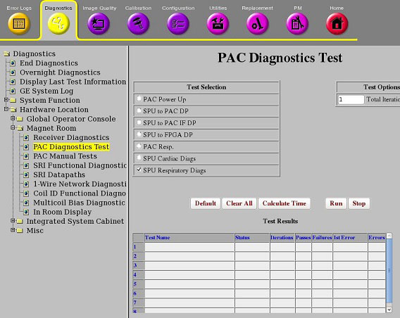
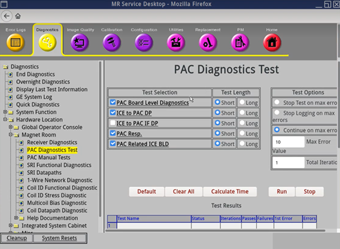

- 00000018WIA3087DF20GYZ
- id_131063112.8
- Jul 25, 2025 5:15:39 PM
Doing the Signal Processing Unit (SPU) respiratory diagnostic
This Signal Processing Unit (SPU) respiratory diagnostic verifies that the trigger signals (respiratory trigger), which are launched from the SPU in Integrated Control Engine (ICE), could be correctly captured by the sequencer module in ICE.
Diagnostic path


Note
Starting from software version(s) 30 or later:
- "PAC" in the software now refers to either PAC (for wired gating) or WPAC/PAWS (for wireless gating).
- "SPU" was changed to "ICE." They are equivalent.
- There is now no difference between Short and Long Test Length.
- SPU to FPGA DP, SPU Cardiac Diags, SPU Respiratory Diags are all now included in single diagnostic called PAC Related ICE BLD
Purpose
This diagnostic verifies that the trigger signals (respiratory trigger), which are launched from the SPU in ICE, could be correctly captured by the sequencer module in ICE.
Components tested
- SPU
Requirements
- None
Block diagram
- None
Test sequence
- Select SPU Respiratory Diags (MR29.1 or earlier) or PAC Related ICE BLD (software version 30 and later) from the PAC Diagnostics Test screen.
- Click Calculate Time for an estimate of the time it will take to run the selected diagnostics.
- Click Run to initiate the test.
Note Do not change the Test Options settings from the default settings unless instructed to do so by a GE HealthCare engineer. There are very few circumstances when these settings need to be changed.
Test results
Diagnostic results show a status of Pass or Fail. If you receive a Fail status, click GE System Log to view the error message. The system log records errors with the date, time, the process tested, and a detailed error message.